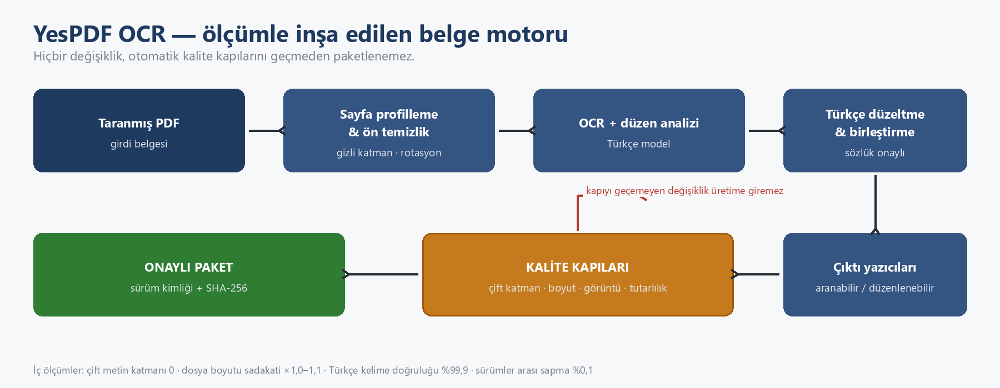
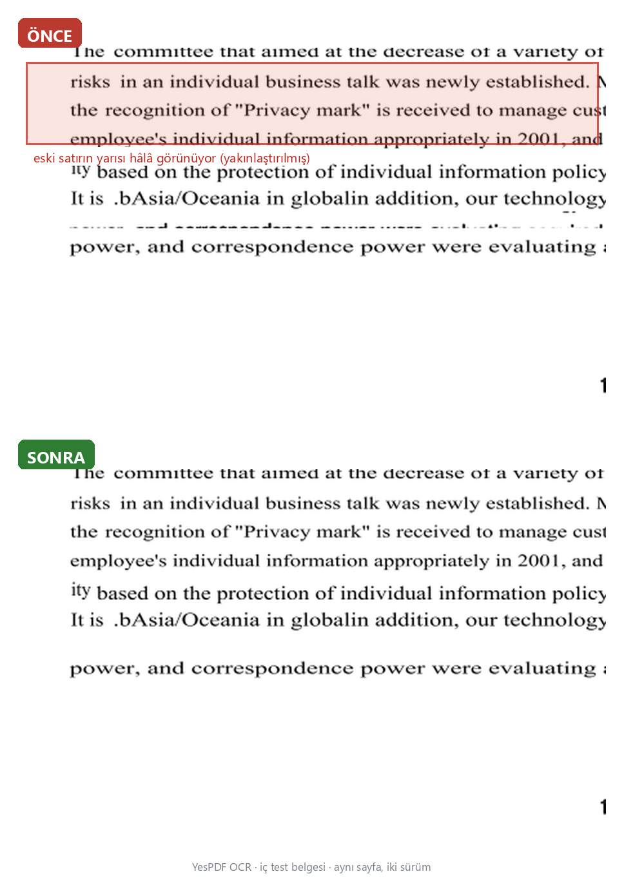

Taranmış belgeleri aranabilir ve düzenlenebilir yapmak için sektörün standart cevabı, büyük belge yazılımı paketlerinden birini lisanslamaktır. Bu yazı, küçük bir mühendislik ekibinin bu lisanslara bağımlı kalmadan, ölçüm disipliniyle neler başarabildiğinin hikâyesi.

Neden bu yola çıktık
Üç gerekçemiz vardı:
Türkçe. OCR için zor bir dil. İ/ı ve S/ş gibi çiftler, çekim ekleriyle kökünden şekil değiştiren kelimeler, aglütinatif yapı… Evrensel modeller Türkçeyi “yaklaşık” okur. Yaklaşık; bir ekstrede, bir sözleşmede, bir resmî evrakta yeterli değildir. Türkçe’yi birinci sınıf vatandaş yapan bir hat kurmak istedik.
Verinin yerinde kalması. Müşterilerimizin bir kısmı için belge, sunucudan çıkmaz. Hava boşluklu (air-gapped) ortamlar, kendi veri merkezi, şifreli depolama… Hazır bulut OCR servisleri bu senaryolarda söz konusu bile olamıyor.
Maliyet ve bağımsızlık. Paket lisansları ölçekle birlikte şişer ve pazarlık masası her yenilemede kurulur. Kendi hattımızda her bileşeni bilinçli seçtik; belge yazılımı devlerinin ürün lisanslarına bağımlı değiliz.
Yöntem: her iddia bir kapı
Bu çalışmanın en önemli çıktısı motorun kendisi değil, üretim disiplini. “Daha iyi OCR yazalım” yerine “iddialarımızı ölçülebilir hâle getirelim” dedik; her şey bunun ardından geldi.
Bugün motorun hiçbir değişikliği, otomatik kalite kapılarını geçmeden paketlenemez:
- Çift katman kontrolü. OCR’lı çıktıda eski ve yeni metin katmanının üst üste binmesi (kopyalarken satırların ikiye katlandığı o sinir bozucu durum) otomatik sayılır. Hedef sıfır.
- Sadakat ölçüleri. Aranabilir çıktı, orijinal sayfa görüntüsünü olduğu gibi korur: görüntü çözünürlüğü, formatı, dosya boyutu. Bir değişiklik 12 sayfalık bir belgeyi 9 kat şiştirmeye başladığında bunu gözle değil kapı yakaladı — o hata yayılsaydı 100 GB’lık bir arşiv 900 GB’a çıkacaktı.
- Sürümler arası tutarlılık. Kelime sayısı, karakter kapsamı, sayfa sayısı… Her yeni sürüm, bir öncekiyle aynı belgeler üzerinde otomatik karşılaştırılır. Sapma eşikleri aşılırsa üretim durur.
- Köken doğrulama. Derlenen her ikili, hangi kaynak kod sürümünden ve hangi günde üretildiğini kendi içinde taşır; paket bütünlüğü SHA-256 ile mühürlenir. Sahada bir davranış görürsek, eldeki paketin hangi üretimden geldiği dakikalar içinde kanıtlanabilir.
Ne ölçüyoruz
| Ölçüm | Hedef | Bu ay iç ölçüm | Neden önemli |
|---|---|---|---|
| Çift metin katmanı | 0 | 0 | Kopyalama/arama güvenilirliği |
| Aranabilir çıktıda dosya boyutu | ≤ ×1,3 | ×1,0–1,1 | Depolama maliyeti; sadakat sözü |
| Sürümler arası kelime sapması | < %2 | %0,1 | Regresyonun erken yakalanması |
| Sayfa görüntüsü kimliği | değişmez | değişmedi | Belge kanıt bütünlüğü |
| Türkçe kelime doğruluğu | — | %99,9 (iç ölçüm) | Ana kalite göstergesi |
| Paket kökeni | commit kimliği | her pakette | Denetlenebilir üretim |
Rakamlar kendi test belgelerimizdeki iç ölçümlerdir; farklı belgelerde farklılık gösterebilir.
İki hikâye, yöntemin gücü
Yarı kalan satırlar
Kullanıcılarımız, karışık punto içeren sayfalarda eski metnin yarısının silinmeden görünürde kaldığını bildirdi. Göze küçük görünen bu kusur, ölçüm zinciriyle adım adım kök nedene indirildi: satırı örtmek için kullanılan boyut hesabı, farklı punto karışımlarında mürekkep yüksekliğini küçük tahmin ediyordu. Düzeltme yapıldı, hemen ardından bu senaryo kalıcı bir kapıya dönüştürüldü — aynı hata bir daha sessizce geri dönemiyor.

“acquired” nerede bozuluyor?
Türkçe modda okunan belgelerdeki İngilizce teknik terimler bazen bozuk çıkıyordu. İlk şüpheli yazım düzeltme katmanıydı; ölçtük — değildi. Sorun, Türkçe modelin Latin alfabesinin Türkçe’de bulunmayan harfleri hiç tanımamasıydı. Çözüm, iki dili ölçümlü bir kuralla birleştirmek oldu: yalnız sözlük onaylı, satırın dilini bozmayan değişimler kabul. Sonuç: Türkçe belgelerde sıfır yanlış müdahale, İngilizce terimlerde kurtarılmış kelimeler.
Dürüstlük: sınırlarımızı da yayınlıyoruz
Hiçbir motor her belgede kusursuz değildir. Bizimki de değil. El yazısı ağırlıklı formlar, hibrit sayfalar (yarısı dijital yarı tarama), düşük DPI kaynaklar… Hangi sınırların açık olduğunu iç kayıtlarımızda tutuyor, her sürümde ölçüyoruz. Çünkü ölçmediğin şeyi düzeltemezsin — ve müşteriye “her şey mükemmel” diyen bir ekip, kendi ölçümlerine güvenen bir ekibe uzun vadede yenilir.
Sonuç
Bu çalışmadan çıkan tablo net: Hazır belge yazılımı lisanslarına bağımlı olmadan, müşteri verisinin kendi merkezinden çıkmadığı, Türkçe’nin birinci sınıf okunduğu, her sürümü ölçümle kapılardan geçirilen bir belge motoru — küçük bir ekiple kurulabilir.
Bunu bir pazarlama iddiası olarak değil, yukarıdaki ölçüm tablosu olarak sunuyoruz.
YesPDF — taranmış belgeleri aranabilir ve düzenlenebilir PDF’e dönüştüren, kurum içi (on-premise) ve masaüstü ortamlarında çalışan belge motoru. Detay ve demo için bizimle iletişime geçin.
→ Demo talep edin